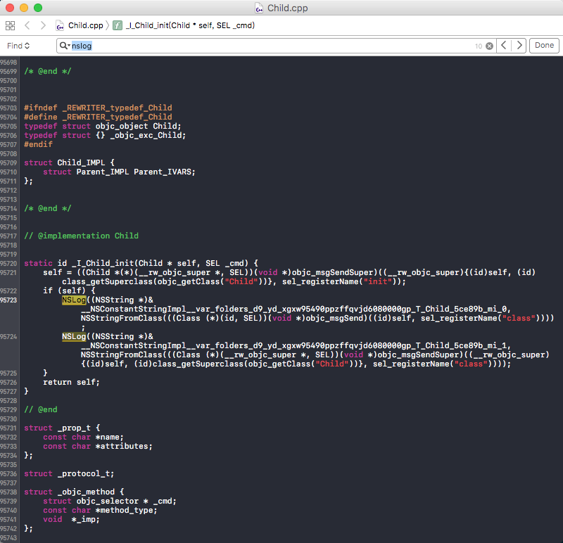

[self class] 与 [super class]
面试题
1 | @implementation Son : Father |
1 | // 运行结果： |
self 是类的隐藏参数，指向当前调用方法的这个类的实例。super 是一个 Magic Keyword， 它本质是一个编译器标示符，和 self 是指向的同一个消息接受者。而不同的是，super 是告诉编译器，调用 class 这个方法时，要去父类的方法，而不是本类里的。
上面的demo中不管调用 [self class] 还是 [super class]，最终的接受消息的对象都是当前 Son 这个对象。
当使用 self 调用方法时，会从当前类的方法列表中开始找，如果没有，就从父类中再找；
当使用 super 时，则从父类的方法列表中开始找。
通过clang命令验证：
1 | clang -rewrite-objc test.m |

从上面的代码中，我们可以发现当在调用 [self class] 时，会转化成 objc_msgSend 方法。看下方法定义：
1 | id objc_msgSend(id self, SEL op, ...) |
而在调用 [super class] 时，会转化成 objc_msgSendSuper 方法。看下方法定义:
1 | id objc_msgSendSuper(struct objc_super *super, SEL op, ...) |
查看 objc_super 结构体发现：
1 | OBJC_EXPORT void objc_msgSendSuper(void /* struct objc_super *super, SEL op, ... */ ) |
objc_super 结构体有两个成员：
- 第一个成员是接收消息的
receiver, 类似于上面的objc_msgSend方法第一个参数self。 - 第二个成员是当前类的父类
super_class。
所以，当调用 [self class] 时，实际先调用的是 objc_msgSend 方法，第一个参数是接收消息的 receiver 也就是 Son 当前的这个实例，然后在 Son 类的方法列表开始查找 selector，如果没有，则去父类的方法列表开始查找 selector，如果父类里面也没有，则会在 NSObject 查找方法列表开始查找 selector，找到后以 self 去调用父类的这个 selector。
objc Runtime 开源代码对 - (Class)class 方法的实现:
1 | - (Class)class { |
而 - (Class)class 的实现就是返回 self 自己，故上述输出结果为 Son。
而当调用 [super class] 时，会转换成 objc_msgSendSuper 方法：
- 从
objc_super结构体指向的superClass父类的方法列表开始查找selector，找到后以objc->receiver去调用父类的这个selector。 - 由于找到了父类
NSObject里面的class方法的IMP，又因为传入的入参objc_super->receiver指向self。self也就是Son当前的这个实例，所以父类的方法class执行IMP之后，输出还是Son。
最后输出两个都一样，都是输出Son。